FoodLuck MEO 操作説明書 04
店舗基本情報
お客様がGoogleで見た時の店舗情報を正しく整えるための現場運用マニュアル
| この資料の目的 店舗名、住所、電話番号、営業時間、Webサイト、SNS、予約リンク、メニュー関連リンクなどは、お客様の来店前の判断に直結します。FoodLuck MEOでは、Googleビジネスプロフィールへ反映される情報を管理画面から整えます。保存や一括更新は外部に反映されるため、内容確認をしてから進めます。 |
|---|
1. 店舗基本情報でできること
店舗基本情報は、お客様がGoogle検索やGoogleマップで店舗を見た時に表示される情報を管理する画面です。飲食店では、営業時間、特別営業時間、臨時休業、電話番号、サイトURL、予約リンク、SNS、店舗説明文、属性、サービスの確認が特に重要です。
| 項目 | 使う場面 | 店舗側で見ること | 注意点 |
|---|---|---|---|
| 基本情報 | 店名、住所、電話番号、サイトURLを整える | 表記ゆれや古い電話番号がないか | Google上で直接直すのではなくFoodLuck MEO側を基準にする |
| 営業時間 | 通常営業、休憩時間、曜日ごとの営業時間 | 実際の営業と合っているか | 祝日や年末年始は特別営業時間で別管理 |
| リンク | 予約、注文、メニュー、SNSへ誘導する | URLが正しく開くか | 業種やGoogle側仕様で表示されない場合がある |
| 属性・サービス | 支払い、設備、サービス内容を伝える | お店の実態と合っているか | メインカテゴリにより選べる項目が変わる |
| 改ざん防止 | 外部からの勝手な変更を戻す | ログと変更履歴を確認する | 設定はFoodLuck側と相談して運用する |
管理画面: 店舗基本情報の入口
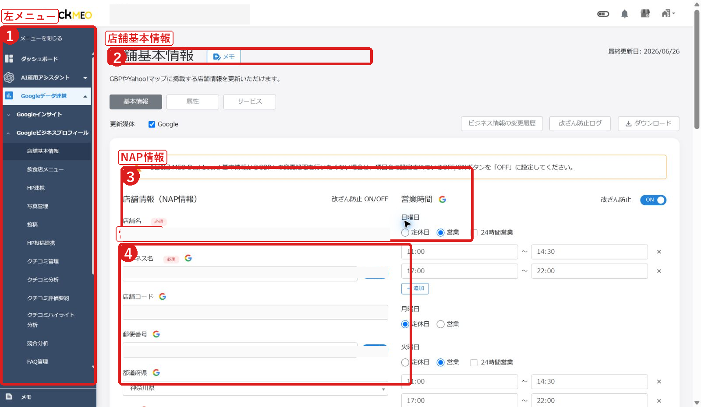
- 左メニューから店舗基本情報を開きます。
- 店舗名を確認してから作業します。複数店舗を管理している場合、別店舗を開いたまま編集しないよう注意します。
2. 編集前に必ず確認すること
| Google側で直接編集しない Googleビジネスプロフィール上で基本情報を直接編集しても、FoodLuck MEO側へ自動で戻ってくるわけではありません。連携後の店舗情報は、FoodLuck MEO側で管理してからGoogleへ反映する流れを基本にしてください。 |
|---|
FAQ画像: 店舗基本情報の編集できる項目を確認する
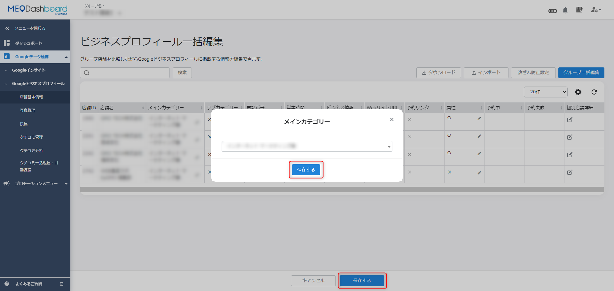
- 編集できる項目と、媒体ごとに反映できる項目を確認します。
- Google、Yahoo!など、媒体ごとに反映可否や入力ルールが異なります。
□ 開いている店舗が正しい
□ 店名、住所、電話番号が実際の店舗情報と一致している
□ Webサイト、予約、注文、SNSのURLが開ける
□ 営業時間、休憩時間、定休日、祝日の営業が合っている
□ 保存後にGoogleや各媒体へ反映される可能性があることを理解している
□ 一括更新の場合、他店舗の情報を上書きしない内容になっている
3. 店名・住所・電話番号・サイトURL・SNSを整える
まずは、お客様が迷わず来店・予約・問い合わせできる状態にします。店名、住所、電話番号は、公式サイト、予約サイト、SNS、店頭表記とできるだけ同じ表記に揃えます。
FAQ画像: ビジネス情報の入力欄
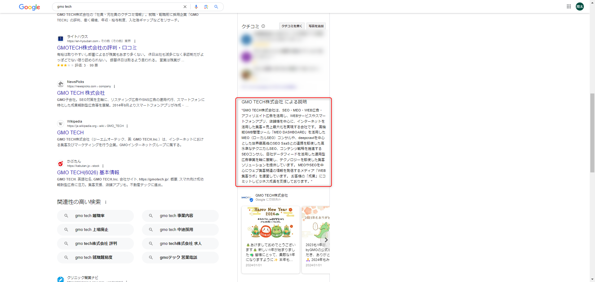
- 店舗の説明文は、お店の特徴、提供している料理やサービス、歴史、こだわりを簡潔に書きます。
- キャンペーン、過度な価格訴求、URL、HTML、キーワードの詰め込みは避けます。
- Google上では改行が反映されない場合があります。長文よりも読みやすい短い文章にします。
| 項目 | 入力・確認の考え方 | 飲食店での注意 |
|---|---|---|
| 店舗名 | 看板、Google、予約サイトの表記を揃える | 不要なキーワードを店名へ足さない |
| 住所 | 都道府県から番地、建物名まで正確に入れる | 移転、建物名変更、階数表記に注意 |
| 電話番号 | 予約や問い合わせにつながる番号を入れる | 古い番号、転送先、非通知不可設定を確認 |
| Webサイト | 公式サイトや予約導線へつながるURLを入れる | 閉鎖済みページや古いLPへ飛ばさない |
| 予約リンク | 業種やGoogle側の仕様により表示欄が異なる | 飲食店は注文、予約、メニューなどのリンクも確認 |
| SNS | プロフィールURLを指定形式で入れる | 店舗公式アカウントか、個人アカウントでないか確認 |
FAQ画像: SNSプロフィールURLの形式
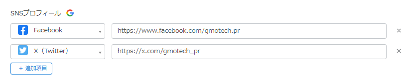
- Facebook、Instagram、X、YouTubeなどはプロフィールページのURL形式を確認します。
- Google側で自動表示されたSNSリンクを消したい場合は、Googleビジネスプロフィールのオーナーアカウントから削除申請が必要になる場合があります。
4. 営業時間・特別営業時間・臨時休業を設定する
飲食店では、営業時間の誤表示が来店機会の損失やクチコミ低下につながります。通常営業時間、祝日や年末年始の特別営業時間、急な臨時休業は分けて管理します。
FAQ画像: 通常営業時間を設定する
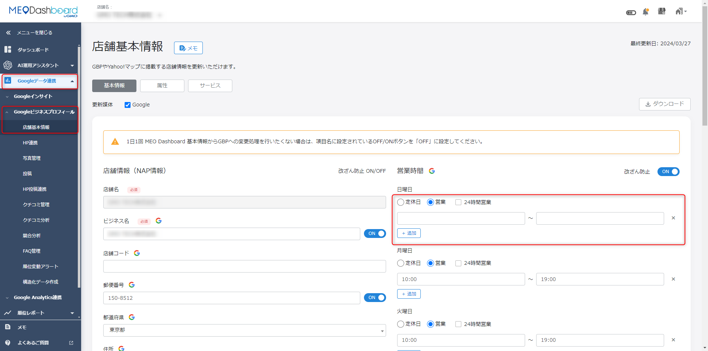
- 曜日ごとの営業開始・終了時間を入力します。
- ランチとディナーの間に休憩がある場合は、時間帯を分けて登録できるか確認します。
FAQ画像: 特別営業時間を設定する
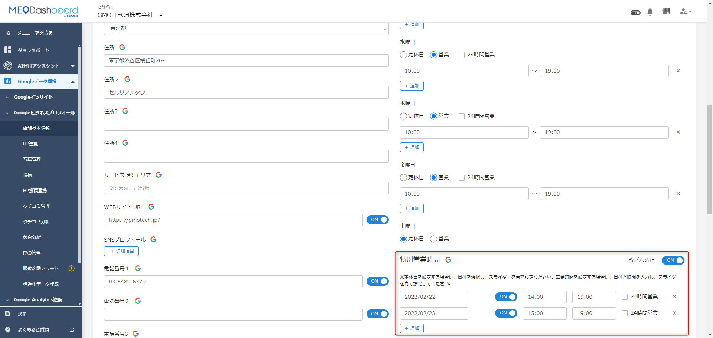
- 祝日、年末年始、お盆、貸切営業など、通常と違う日だけ特別営業時間で設定します。
- Yahoo!プレイスへ反映できる特別営業時間は件数上限があります。先の日程を大量に入れる時はFoodLuck側へ確認します。
FAQ画像: 臨時休業・営業ステータス
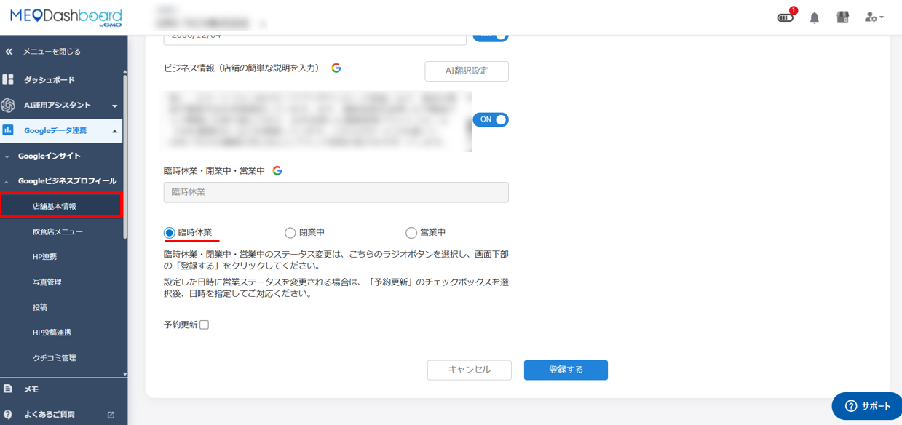
- 急な休業や長期休業は、営業ステータスや臨時休業設定を使います。
- 閉店時は、閉業表示を正しく設定し、来店予定のお客様が迷わない状態にします。
| 使う設定 | 使う場面 | 注意 |
|---|---|---|
| 通常営業時間 | 普段の曜日別営業時間 | 毎週変わらない営業時間を入れる |
| 特別営業時間 | 祝日、年末年始、イベント、貸切 | 通常営業時間を書き換えず、特定日だけ設定する |
| 臨時休業 | 急な休み、設備工事、長期休業 | 予約導線やSNS告知とも合わせて確認する |
| 閉業 | 閉店した場合 | Google上でお客様に閉店が伝わるようにする |
5. 更新予約・予約時間の変更
営業時間や営業ステータスを、指定した日時に反映したい時は予約更新を使います。年末年始、臨時休業の開始、リニューアルオープンなど、事前に決まっている変更に向いています。
FAQ画像: 営業ステータスの変更を予約する
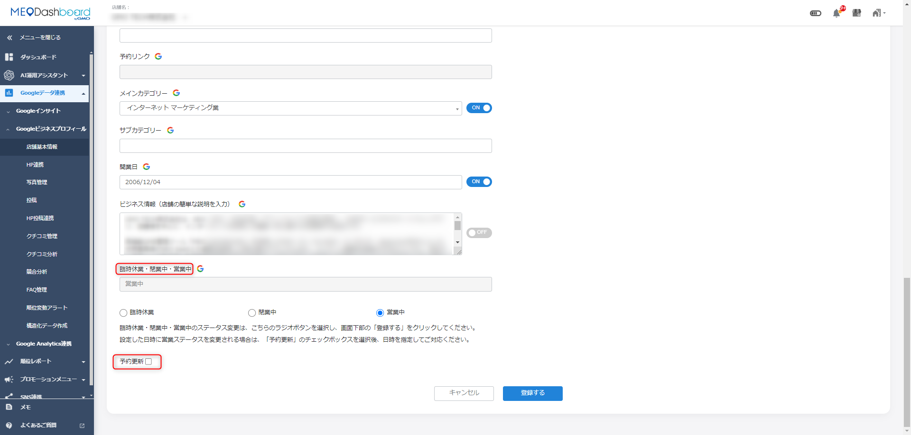
- 臨時休業、閉業中、営業中への変更を予約できます。
- 予約した内容は、指定日時まで編集できない項目が出るため、登録前に日時と内容を確認します。
FAQ画像: 店舗基本情報の予約更新
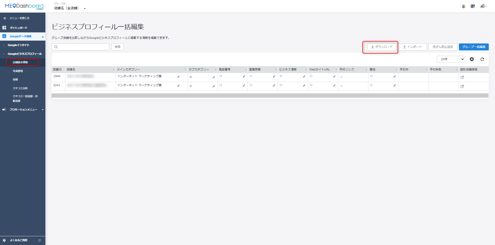
- 一括編集では、予約反映日時を指定して登録できる項目があります。
- 予約日時を空欄にした項目は即時反映対象になるため、Excel入力時は特に注意します。
FAQ画像: 予約時間を変更する
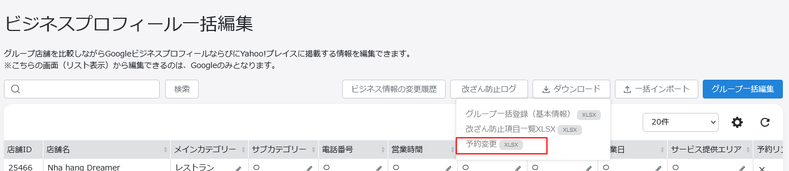
- 予約済みの内容は、予約変更用ファイルで日時変更や予約削除を行います。
- 内容そのものを変える操作ではありません。内容を変えたい場合は、予約を削除して登録し直す運用になります。
| 予約更新の注意 予約日時は、少なくとも1時間以上先などの条件があります。Excelで予約変更する場合、日付と時刻の形式、削除指定の書き方、対象店舗IDを必ず確認してください。 |
|---|
6. カテゴリー・属性・サービス・宅配/受け取り
カテゴリー、属性、サービスは、お客様がGoogle上でお店を比較する時の判断材料になります。飲食店では、テイクアウト、宅配、支払い方法、設備、提供サービスなどが実態と合っているかを確認します。
FAQ画像: 属性を設定する
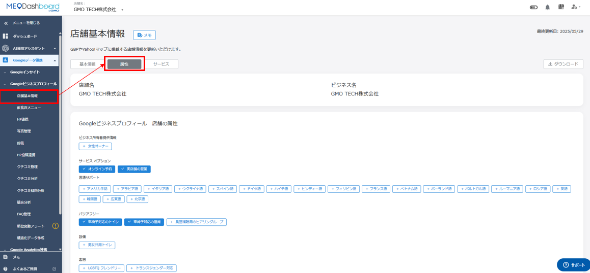
- 属性はメインカテゴリによって選べる項目が変わります。
- グループ一括登録では、対象店舗のメインカテゴリが揃っているか確認します。
FAQ画像: サービスを追加する
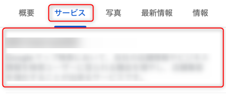
- メインカテゴリ、サブカテゴリに紐づくサービス名や詳細を追加します。
- Google側の候補が表示される場合があります。店舗実態と合うものを選びます。
FAQ画像: 宅配・受け取りリンクの設定
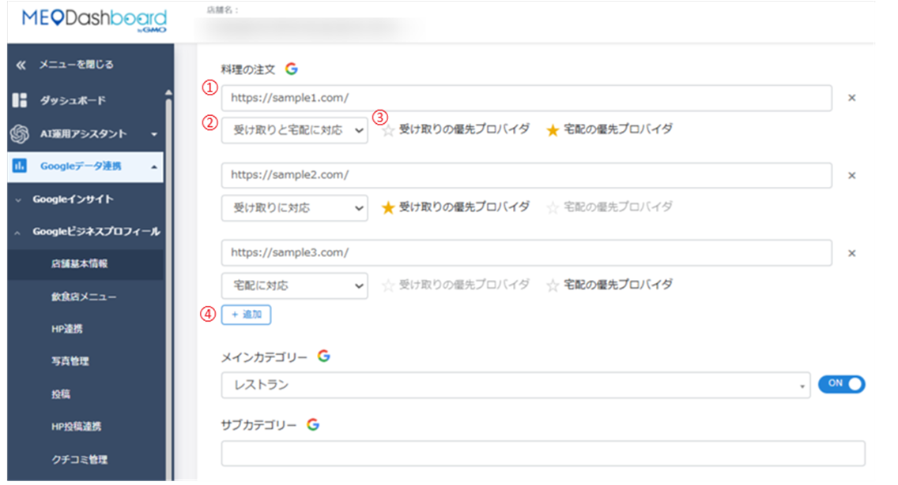
- 料理の注文リンクでは、宅配、テイクアウト、受け取りなどのURLを設定します。
- 優先するプロバイダを1つ選ぶ項目があります。反映順や表示はGoogle側の仕様に左右される場合があります。
- カテゴリーを変えると、選べる属性やサービスも変わる場合があります。
- 宅配や受け取りURLを入れても、Google側へ即時反映されるとは限りません。
- 一部カテゴリではAPI経由で更新できない項目があります。その場合はFoodLuck側で確認します。
- 実施していないサービスを入れると、来店後の不満や低評価につながります。
7. 改ざん防止・更新履歴・ログを確認する
Google上の店舗情報は、第三者の提案やGoogle側の判断で変更される場合があります。改ざん防止は、FoodLuck MEOに登録している情報を基準にして、意図しない変更を戻すための機能です。
FAQ画像: 個店の改ざん防止設定
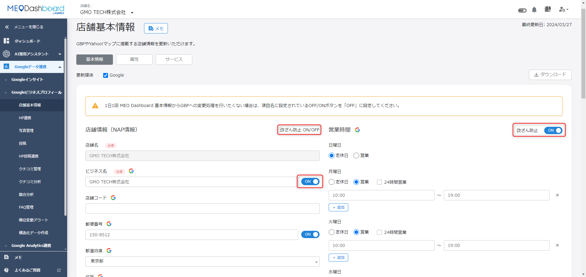
- 個店画面では、店舗基本情報内で改ざん防止をON/OFFします。
- ONにする前に、FoodLuck MEO側の登録情報が正しいか必ず確認します。
FAQ画像: グループの改ざん防止設定
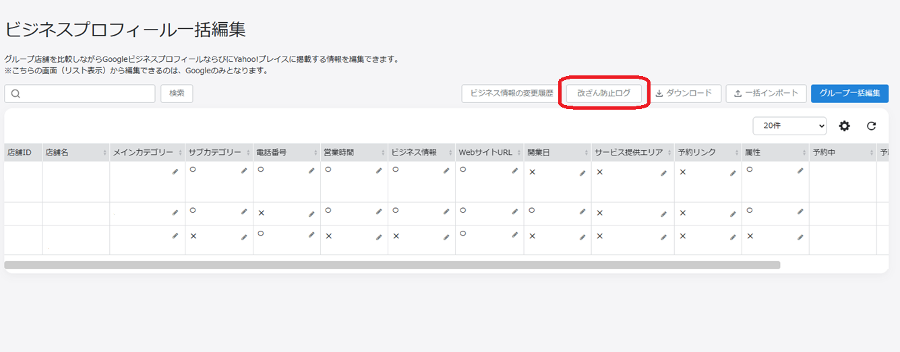
- グループでは、改ざん防止ログから対象項目を選んで設定します。
- 複数店舗へ影響するため、店舗側だけで判断せずFoodLuck側と確認して進めます。
FAQ画像: 店舗基本情報の更新履歴
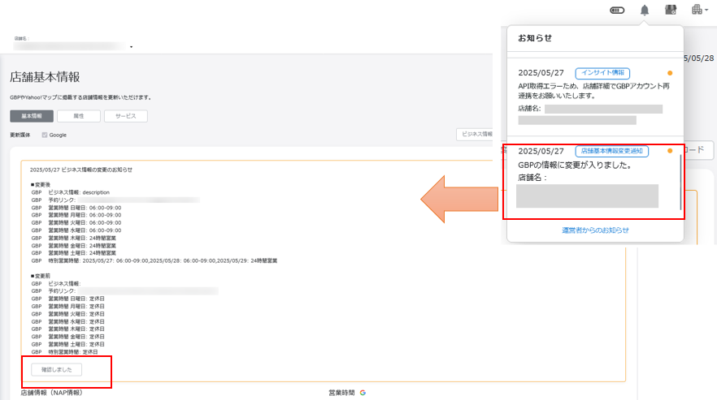
- いつ、どの項目が、どの媒体へ更新されたかを確認します。
- 履歴やログは、反映されない時や意図しない変更があった時の確認材料になります。
| 改ざん防止の動くタイミング FAQでは、早朝、昼、夕方など複数の処理時間帯が案内されています。設定後すぐに変わるものではなく、処理開始から反映完了まで時間がかかります。Yahoo!は対象外の案内があります。 |
|---|
8. 一括編集・グループ編集・Excel更新
複数店舗をまとめて編集する場合は、グループ一括編集やExcel一括編集を使います。ただし、一括編集は追記ではなく上書きになる項目があります。チェーン店や複数店舗の飲食店では特に注意します。
FAQ画像: グループ一括編集の入口
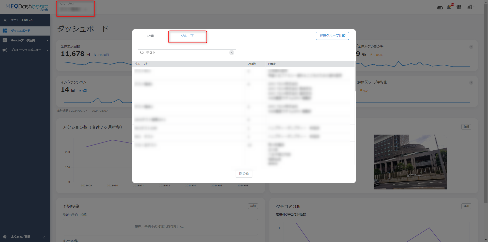
- グループ画面から、店舗基本情報の一括編集へ進みます。
- 対象店舗、対象項目、反映先媒体を確認してから作業します。
FAQ画像: Excelで店舗基本情報を編集する
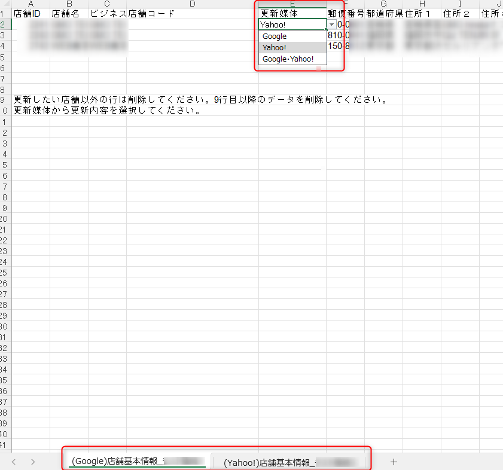
- テンプレートをダウンロードし、決められた列へ入力します。
- 営業時間、特別営業時間、属性、サービスなどは入力ルールが細かいため、FAQの記載形式に合わせます。
| 一括編集はFoodLuck側で確認 店舗ごとに営業時間、予約URL、Webサイト、定休日が違う場合、一括編集でまとめて入れると誤った情報が広がる可能性があります。飲食店の日常運用では、個店画面で確認し、複数店舗更新はFoodLuck側で確認して進めます。 |
|---|
| 一括編集項目 | できること | 注意 |
|---|---|---|
| メインカテゴリ | 全店舗のカテゴリを揃える | 業態が違う店舗を混ぜない |
| WebサイトURL | 共通URLをまとめて設定する | 店舗別ページがある場合は個別設定 |
| 営業時間 | 全店舗共通の営業時間を設定する | 曜日、休憩時間、祝日営業の違いに注意 |
| 特別営業時間 | 年末年始などをまとめて設定する | Yahoo!の件数上限に注意 |
| 営業ステータス | 臨時休業、閉業、営業中をまとめて設定する | 対象店舗の誤選択は重大な誤表示につながる |
| ホテル向け項目 | ホテル業態用の項目を編集する | 飲食店では通常使わない。該当契約のみ対応 |
9. AI翻訳・多言語のビジネス文章
インバウンド対応や多言語検索への備えとして、店舗説明文をAI翻訳する機能があります。翻訳文もGoogle上で見られる情報になるため、料理名、地名、店名、固有名詞は人の目で確認します。
FAQ画像: AI翻訳設定
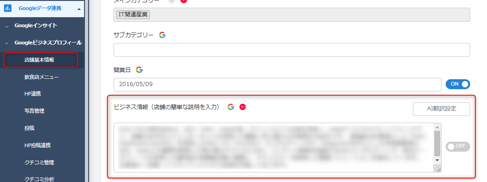
- 翻訳したい言語を選び、ビジネス文章を作成します。
- 翻訳後も、意味がずれていないか、料理名や店舗名が不自然でないか確認します。
FAQ画像: 翻訳済みビジネス文章の確認
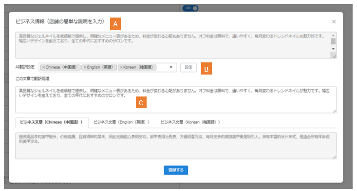
- 本文と翻訳文を合わせた文字数制限があります。FAQでは全角375文字以内の案内があります。
- 文字数を超える時は、伝えたい強みを絞ります。
- 翻訳は便利ですが、メニュー名、地名、固有名詞は誤訳が起きやすいです。
- 外国語の説明文でも、過度なキャンペーン表現やURLの羅列は避けます。
- グループ一括で翻訳文を入れる場合、全店舗で共通して使える文章か確認します。
10. 店舗基本情報の現場チェックリスト
□ 店名、住所、電話番号が現在の店舗情報と一致している
□ Google上で直接編集せず、FoodLuck MEO側の情報を基準にした
□ Webサイト、予約、注文、メニュー、SNSのURLが正しく開く
□ 通常営業時間、休憩時間、定休日が実際の営業と一致している
□ 祝日、年末年始、臨時休業は特別営業時間または営業ステータスで設定した
□ 宅配、テイクアウト、受け取り対応が実態と合っている
□ 属性、サービスに、実施していない内容を入れていない
□ 一括編集は上書きになる項目があるため、FoodLuck側と確認した
□ 改ざん防止をONにする前に、FoodLuck MEO側の登録内容を確認した
□ 更新予約の日時、対象店舗、対象項目を登録前に確認した
11. この資料に反映したFAQ記事
このカテゴリの下層FAQ記事34件を確認し、操作方法・注意点として本文へ反映しています。記事名だけの羅列にならないよう、店舗が現場で判断する内容と、FoodLuck側で対応する内容に分けています。
| FAQ記事 | 反映した章 | 店舗向けの扱い |
|---|---|---|
| AI翻訳機能_店舗基本情報 ビジネス文章 | ビジネス文章・多言語 | 店舗側で確認し、変更はFoodLuckへ相談 |
| AI翻訳機能_店舗基本情報 ビジネス文章（グループ） | 一括編集・管理者向け | FoodLuck側と確認して進める項目 |
| GBPとDashboard間の変更の同期について | 改ざん防止・履歴・同期 | 店舗側で確認し、変更はFoodLuckへ相談 |
| Googleビジネスプロフィールに予約リンクの入力欄がない | 更新予約・予約リンク | 店舗側で確認し、変更はFoodLuckへ相談 |
| Googleビジネスプロフィール上で基本情報を編集すると、ダッシュボードに反映されない | 改ざん防止・履歴・同期 | 店舗側で確認し、変更はFoodLuckへ相談 |
| MEO Dashboard上での属性の設定方法 | カテゴリー・属性・リンク | 店舗側も内容確認する項目 |
| SNSプロフィールのURL記載形式について | カテゴリー・属性・リンク | 店舗側も内容確認する項目 |
| Yahoo!プレイスへの「特別営業時間」の登録について | 営業時間・営業ステータス | 店舗側も内容確認する項目 |
| 【グループ】宅配・受け取り設定 | カテゴリー・属性・リンク | FoodLuck側と確認して進める項目 |
| 【グループ】改ざん防止機能について | 改ざん防止・履歴・同期 | FoodLuck側と確認して進める項目 |
| 【ホテル】店舗基本情報の一括編集方法（Excel） | 一括編集・管理者向け | FoodLuck側と確認して進める項目 |
| 【ホテル】店舗基本情報の編集（個店） | 一括編集・管理者向け | FoodLuck側と確認して進める項目 |
| 【ホテル】店舗基本情報を全店舗共通で編集する方法 | 一括編集・管理者向け | FoodLuck側と確認して進める項目 |
| 【個店】宅配・受け取り連携 | カテゴリー・属性・リンク | 店舗側も内容確認する項目 |
| 【個店】改ざん防止機能について | 改ざん防止・履歴・同期 | FoodLuck側と確認して進める項目 |
| グループ一括編集ボタンについて | 一括編集・管理者向け | FoodLuck側と確認して進める項目 |
| サービスの一括登録の方法 | カテゴリー・属性・リンク | FoodLuck側と確認して進める項目 |
| サービスの追加方法 | カテゴリー・属性・リンク | 店舗側も内容確認する項目 |
| テイクアウトや宅配等の営業時間の設定方法 | 営業時間・営業ステータス | 店舗側も内容確認する項目 |
| ビジネス情報について | ビジネス文章・多言語 | 店舗側も内容確認する項目 |
| 営業ステータスの変更を予約する方法 | 営業時間・営業ステータス | 店舗側で確認し、変更はFoodLuckへ相談 |
| 営業時間の記載方法（Excel） | 営業時間・営業ステータス | FoodLuck側と確認して進める項目 |
| 営業時間の設定方法 | 営業時間・営業ステータス | 店舗側も内容確認する項目 |
| 属性の一括登録 | カテゴリー・属性・リンク | FoodLuck側と確認して進める項目 |
| 店舗基本情報の一括編集方法（Excel） | 一括編集・管理者向け | FoodLuck側と確認して進める項目 |
| 店舗基本情報の予約方法について | 更新予約・予約リンク | 店舗側で確認し、変更はFoodLuckへ相談 |
| 店舗基本情報の予約時間を変更する方法 | 更新予約・予約リンク | FoodLuck側と確認して進める項目 |
| 店舗基本情報の編集方法（◯☓の表） | 店舗基本情報の編集 | 店舗側で確認し、変更はFoodLuckへ相談 |
| 店舗基本情報更新履歴について | 改ざん防止・履歴・同期 | 店舗側で確認し、変更はFoodLuckへ相談 |
| 改ざん防止ログ | 改ざん防止・履歴・同期 | FoodLuck側と確認して進める項目 |
| 改ざん防止機能が働くタイミングについて | 改ざん防止・履歴・同期 | FoodLuck側と確認して進める項目 |
| 特別営業時間の設定方法 | 営業時間・営業ステータス | 店舗側も内容確認する項目 |
| 臨時休業の掲載方法 | 営業時間・営業ステータス | 店舗側も内容確認する項目 |
| 閉業時の対応方法 | 営業時間・営業ステータス | FoodLuck側と確認して進める項目 |